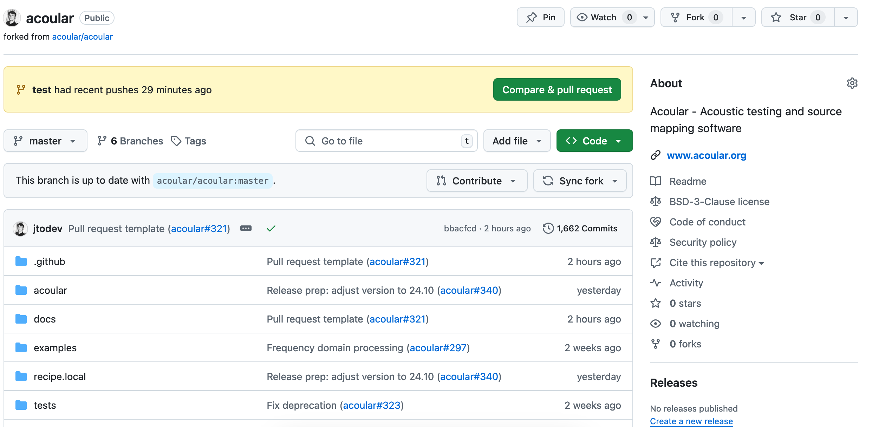
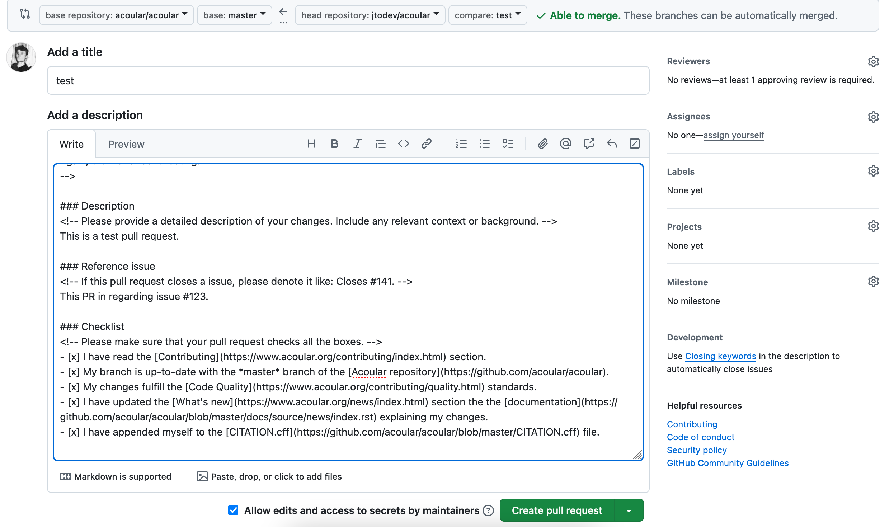
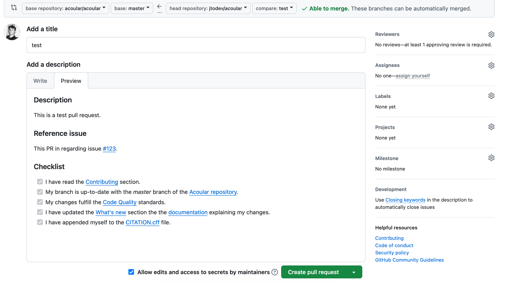

Submitting a pull request¶
Preparing the branches¶
Before submitting your fist pull request, make sure to have the commits you want so submit on a branch other than your master branch. If not, add a new branch like this:
git branch new-branch
You have just created a new branch called new-branch. This branch will have the same commit history as the master branch.
You want to keep the master branch in sync with the master branch on the main Acoular repository on GitHub. To make sure it is, look here.
In case your master branch has changed, execute the following commands to make sure that there will be no merge conflicts later on. Mind that you should be on your master branch when doing this.
git fetch
git reset origin/master
git checkout new-branch
git rebase master
You are now on the new-branch branch. If you are pleased with your changes and they meet the criteria stated in the contributing guidelines, push your changes to your GitHub repository. At this point, there might be no upstream branch in your GitHub repository. To create one, execute:
git push --set-upstream origin new-branch
Creating a pull request on GitHub¶
If you visit to your forked Acoular repository on GitHub now, you will see something like this:
{kind=link}

Note the orange box. To open a pull request, click on Compare & pull request. Alternatively you can select the branch you want to commit in the branch menu and click Contribute.
You will get redirectet to a page where you should fill out a Markdown form with a description of your pull request and the issue it is regarding (if it is regarding an issue). Make sure to fill out the checklist boxes with x’s (if they apply of course).
The finished result should look like this:
{kind=link}

And if you click Preview, it should look like this:
{kind=link}

Click Create pull request to submit your changes and get them reviewed.